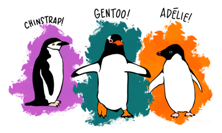
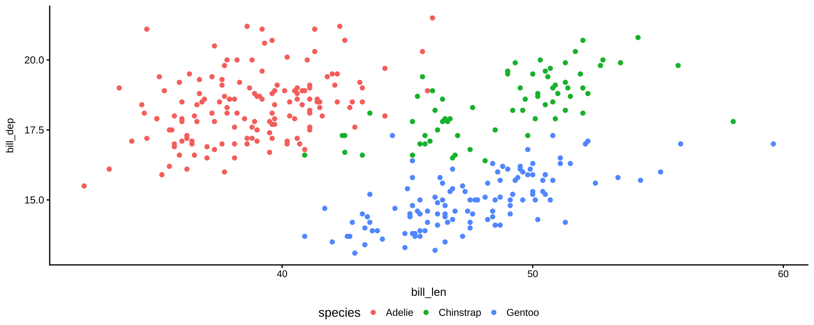
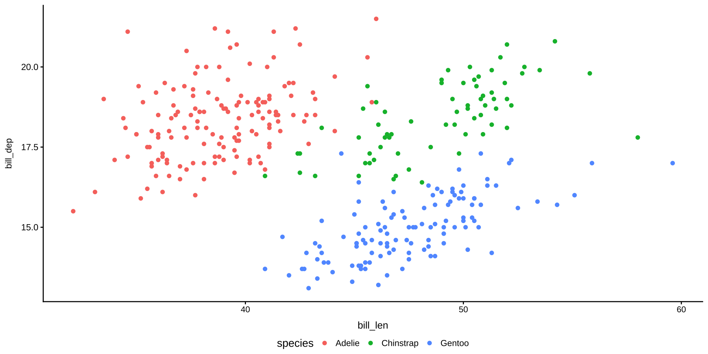
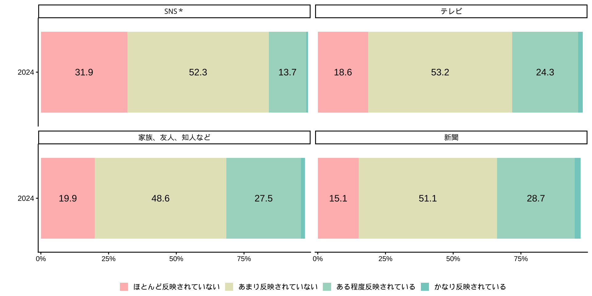
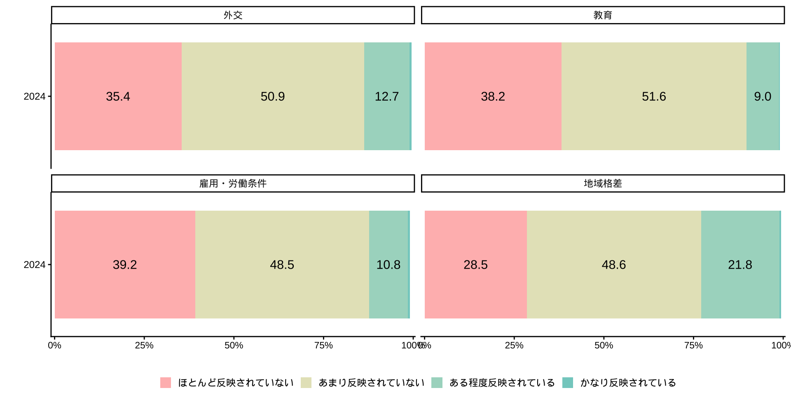
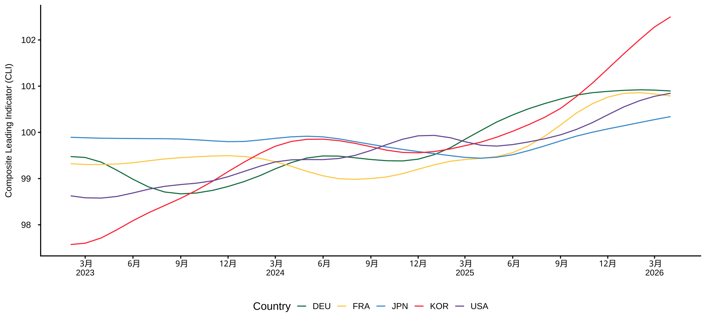

![]()
| 項目 | 比率 |
|---|---|
| 宿題：授業の感想 | 30 |
| 宿題：演習 | 30 |
| レポート | 20 |
| プレゼンテーション | 10 |
| 受講態度 | 10 |
RとQuartoではじめるデータサイエンス
#1 イントロダクション
0. 本日の目標
本日の目標
- 授業趣旨と成績評価方法をしっかりと理解する
- 表とデータセットの違いをなんとなく理解する
- Rの便利さ、凄さをなんとなく理解する
- Rを使える環境を各自のPC/macに整備する
- Rで散布図を作る
Ⅰ. 自己紹介
自己紹介
- 氏名：苅谷千尋（かりやちひろ）
- 所属：金沢大学 教育支援センター
- 主担当業務：高大接続コア・センター業務
- 専門：政治学 > 政治思想史（イギリス）
- 18世紀イギリスの議会政治の発展に、古典古代の著作（キケロ；サルスティウス；タキトゥス）の読解が果たした役割（レトリックの受容史）Cf. 市民革命史観
- Webサイト
自己紹介
思想史研究とデジタルヒューマニティーズ
- 史料のデータ化（データベース化）
- 量的テキスト分析を可能とする分析ツールの登場
- 研究プロジェクト
- 18世紀イギリスの総合雑誌の比較分析
- 日本の議会政治における言い回し・形容詞・副詞の使用の変化（「強い」「美しい」「ご指摘は当たらない」「丁寧に説明する」）
自己紹介
- 名前、学類
- 受講動機
- データ分析したい対象（の有無）
- 高校「情報」科目で習ったこと（該当者のみ）
- プログラミングの経験の有無

Ⅱ. 学修目標と成績評価
授業の主題
データサイエンスは、膨大なデータを分析する、あるいは個々のデータを結合しビッグデータにして解析することが必要です。そのためにはMicrosoft ExcelのようなGUI（グラフィカルユーザーインターフェース）に依拠するアプリケーションではなく、コード中心のプログラム言語が適しています。研究分野を問わず、海外の大学や研究機関において、「R」（後述）や「Python」のスキルが重視される傾向にあるのはこのためです。日本の研究機関は、全般的に、このような海外のトレンドに追いついていません。
この授業は、統計プログラム言語「R」の基本的な機能と、Quarto（markdownにもとづく簡易入力とRの出力結果をPandocにもとづいて出版するPosit社の推奨する新しい出版システム）を学習するものです｡R言語はプログラム言語のなかでは比較的習得が容易であり、社会科学から自然科学にいたるまで幅広い分野の研究者が利用しています｡
学修目標（到達目標）
- 受講生が、R言語の基本的な操作（データの読み込み、加工、抽出、結合など）ができる
- 受講生が、ggplot2パッケージを使い、基本的な図（棒グラフ；ヒストグラム；箱ひげ図；散布図；折れ線グラフ）を作成できる
- 受講生が、自分の関心のあるテーマにかかわるデータから適切な図を作成できる
授業概要
授業は、講義と演習の形式でおこないます｡
講義の前半は、教員が用意した授業教材を中心に、コードの意味や記述方法、動作、実行結果などを例示、解説します｡ 後半の演習は、1. 各自所有のノートPCを使って演習をおこないますので、必ずノートPCを持参して下さい｡テキストの例題と合わせて、2. 自分の関心のあるテーマにかかわるデータセットでも、同様のコードを実践して下さい｡
授業教材はウェブサイトで公開します。このウェブサイトはQuartoとGitHubを用いて作成されています。
評価の割合
評価の割合
ルーブリック
過年度の作品
- 日本における気温の変遷および緯度との相関調査：北陸を中心に
- 鳥類の地域別分布と種の多様性：水鳥の観点から
その他
問い合わせ先
- メール：kariyach@staff.kanazawa-u.ac.jp
- 研究室：総合教育2号館 670号室（Advance Appointment Required）
補足
- この授業は「データサイエンス特別プログラム」の対象科目です
上記以外の点は、各自、シラバスで確認下さい
Ⅲ. データサイエンスの第一歩
高校「情報」
良い点
- 必修化
- 思考型問題
課題
- データ構造についての思想・哲学を教えない
- 実際のデータ処理について教えない
- データ整理（前処理）を扱わない
- ロボット工学と混同しがち
- 教員のバックグラウンド：プログラミング＆情報技術
- NOT データエンジニアリング
- 「データサイエンス教育」ではなく「プログラミング教育」に近い
高校「情報」
学習指導要領
イ（ウ） データの収集，整理，分析及び結果の表現の方法を適切に選択し，実行し，評価し改善することでは，データを問題の発見・解決に活用するために，必要なデータの収集について，選択，判断する力，それに応じて適切なデータの整理や変換の方法を判断する力，分析の目的に応じた方法を選択，処理する力，その結果について多面的な可視化を行うことにより，データに含まれる傾向を見いだす力を養う。また，データの傾向に関して評価するために，客観的な指標を基に判断する力，生徒自身の考えを基にした適正な解釈を行う力を養う。更に，地域や学校の実態及び生徒の状況に応じて，数学科と連携し，データを収集する前に，分析の構想を練り紐付ける項目を洗い出したり，外れ値の扱いについて確認したり，データの傾向について評価するために仮説検定の考え方などを取り扱ったりすることも考えられる。
データサイエンスの誤解
ツールに依拠した学びが推奨される傾向にあり
- データサイエンス＝Pythonを学ぶこと、生成AIを使えるようになること、という誤解（特に日本は顕著）
- もっとも重要なのはデータの形についての思想・哲学であり、ここがデータサイエンスの出発点
データの形
- 表とデータセットを区別する（日本はエンジニアを除いてできていない）
- 表：人間が目で見て理解できる
- データセット：コンピュータが理解できる
- データの型が整っていないとAIも機械学習も動かない
- よいデータ構造は、分析を簡単にし、エラーを減らし、再現性を高める
表によるデータ提供
- 総務省統計局 e-stat
- エクセルデータ（複雑なカラム名構造、結合、空白行）。pdfも多い
- 例：家計調査報告 ―月・四半期・年―
-
OECD
- データセット、csvによるデータ提供
Microsoft Excelの弊害
- 見た目の美しさを優先（結合など）し、データの意味や扱いやすさを軽視
- どのような操作をしたのか、再現できない（研究にとっては致命的）
- フィルタリングして、シートを切り分け、作図、作表する
- データの追加や修正があった場合、一からすべての作業をやり直し
- ファイルを直接、操作する
Note
- Microsoft Excelは例示です（デファクト・スタンダードであるため）。マウス操作中心のGUI表計算アプリは、すべて同じ問題を抱えています
データセットの基本原則
- コンピュータが理解でき、かつ、プログラミングで操作しやすいデータセット（整然tidyなデータ）
原則
- 1列 = 1種類のデータ
- 1行 = 1観測
例
| 名前 | 科目 | 試験 | 評価 | 点数 |
|---|---|---|---|---|
| 田中 | 国語 | 中間 | 知識 | 80 |
| 田中 | 国語 | 中間 | 記述 | 70 |
| 田中 | 国語 | 期末 | 知識 | 85 |
| 田中 | 国語 | 期末 | 記述 | 75 |
| 田中 | 数学 | 中間 | 知識 | 72 |
| 田中 | 数学 | 中間 | 記述 | 68 |
詳しくは次週以降に解説します
Ⅳ. なぜRなのか / なぜQuartoなのか
なぜRなのか / なぜQuartoなのか
1. コード（スクリプト）
- 再現可能性
- コードはすべての手順が残る
- 真似しやすい / 生成AIと親和性が高い / ミスも再現できる / 共同作業・共同研究しやすい
- Cf. マウス操作（GUI）中心：Microsoft Excel; SPSS; JASP; GraphPad Prism; KH Coder
- コードはすべての手順が残る
- 作業の効率化
- 一度作ったコード（データ処理）を別のデータでも使い回せる
- 安全性
- 元データ（ファイル）を加工しない
- Rが、メモリ上にデータを保持し、そのコピーを操作する
なぜRなのか / なぜQuartoなのか
2. R言語の特性
-
R：統計解析・データ分析に特化して開発された言語、構文
- Cf. Python：機械学習・AI・Web系のライブラリに強みあり
- Cf, Matplotlib：Pythonで広く使われる可視化ツール。柔軟性は高いが、コードが冗長になりやすく、見た目の調整には手間がかかる。統計分析はできない（statsmodels）。図の作成機能のみで、レポート出力機能はない
3. 豊富な可視化ツール
なぜRなのか / なぜQuartoなのか
4. オープンソースと親切なコミュニティ
-
各専門分野の研究者が､当該分野に最適なパッケージを作っている
- 私（苅谷の場合）：ngramr; gutenbergr
- 困っていることはみんな一緒（先達の回答が参考になる）
なぜRなのか / なぜQuartoなのか
5. 簡易的な記述法（Quarto）
| 要素 | Markdown構文 | 例 |
|---|---|---|
| 見出し |
# H1## H2
|
H1 見出し H2 見出し |
| 太字 | **bold text** |
bold text |
| イタリック | *italicized text* |
italicized text |
| 引用 | > blockquote |
> blockquote |
| リンク | [金沢大学](https://www.kanazawa-u.ac.jp) |
金沢大学 |
| 画像 |  |
色や文字の大きさは、別途、CSSファイルを用意して、変更する必要があります
なぜRなのか / なぜQuartoなのか
6. レポーティング機能と多様な出力形態（Quarto）
- Rは単なる分析ツールではなく、結果をそのままレポートやスライドとしてまとめるレポーティング機能を備える
- 出力形式は多様であり、YAML（ヤムル・後述）の設定を少し変えるだけ
- Documents: html; MS Word; PDF: Typst
- Presentations: reveal.js; PowerPoint; PDF: Beamer
- Dashboards
- Website
7. 無料
なぜRなのか / なぜQuartoなのか
-
図表を数個、作る程度の作業（研究）の場合、Rのよさを実感しにくい
- 大学生（学部生）
- 研究者、企業は繰り返し同じ分析を行うことが一般的（年次レポート、月次レポート、実験）
- Rを使えることについての潜在的ニーズは高いが、大学はそのような人材を養成できていない
- 日本の企業はRの利点を把握しておらず、そもそもRを知らない（Yahoo!Japanやメルカリなど、データを重視する一部の企業のみ）
なぜRなのか / なぜQuartoなのか
地域経済分析システム（RESAS）
RESASは、地域経済に関するビッグデータを地図上やグラフで見える化できる政府のシステムです（公式サイト）。
地方創生☆政策アイデアコンテスト
地域経済分析システム（RESAS）等を活用し、地域課題の分析を踏まえた地域の未来をよりよくする政策アイデアを募集するコンテストです。地方創生やデータ利活用に関心を持つ学生や地方公共団体職員、民間企業の方など、どなたでもご応募が可能です（公式サイト）
- 2026年の開催？
Ⅴ. R環境の整備
R StudioとQuartoファイル
R Studio
R StudioとQuartoファイル
Quartoファイル
R環境の整備
- R本体をインストール（OSで操作）
- R Studioをインストール（OSで操作）
- 授業用フォルダの作成（OSで操作）
- プロジェクトの作成（R Studioで操作・以降同じ）
- ファイルの作成
- R Studio（ソースペイン）の外観の変更
- 文字の配色の変更
- 不可視文字を表示
- R Studioの保存・復元設定
- 目次の追加（YAML）
- パッケージの追加（tidyverse）
- Setup Chunkの作成
- パッケージの読み込み
アプリのインストール
1. R本体をインストール
- ブラウザからRにアクセス
- 手持ちのPCに適したファイルをダウンロードして、実行
- Windows / macOS / Linux
2. R Studioをインストール
- ブラウザからR Studioにアクセス
- 手持ちのPCに適したファイルをダウンロード、実行
- Windows / macOS / Ubuntu
ファイルの作成
3. この授業用のフォルダ作成（OSで操作）
ファイル名は念のため英数のみとし、また空白文字を使わないで下さい
4. プロジェクトの作成（R Studioで操作、以後同じ）
- メニュー > File > New Project > Existing Directory > 3で作成した フォルダを指定 > Create Project
Rprojファイル
- Rprojファイルは、R Studioプロジェクトを管理するための設定ファイルで、作業ディレクトリや環境設定、ファイルの表示状態などを保存する
- プロジェクトを開くと、自動でそのフォルダが作業ディレクトリになり、パスの管理や依存関係の整理が簡単になる
ファイルの作成
5. R Quartoファイルの作成
- メニュー > File > Quarto Document > Create
- Title: 任意
- HTML / PDF / Word → HTMLにチェック
- 「Editor: Use visual markdown editor」のチェックを外す（外れていることを確認する）
- 名前をつけて保存（ファイル名のどこかに受講生を特定できる名前を入れて下さい。次回以降、ファイルを提出してもらうためです）
- 例：inClassExercise_kariya.qmd
ファイル名は念のため英数のみとして下さい（Rの操作に慣れてきて、日本語で問題ないことが確認できたら、自由に使って構いません）
空白文字を使わないで下さい（空白に代わる文字として_（アンダースコア）の使用が一般的）
うまくいかない場合
- Consoleパネルに表示されるメッセージが英語の場合：
- エラーメッセージの日本語化（ターミナル操作が必要）
- Mac: R 環境の Locale 設定（日本語を使用する）
- Win: (R) R4.2でWindowsでもUTF-8を設定できることを確認した
- インストールがうまくいかない場合：
R Studio（ペイン）の見方
- 4画面構成
- 主要な操作は左上のソースペインで行う

R Studio（ソースペイン）の外観の変更
6. R Studio（ソースペイン）の外観の変更
- コードを書くうえで、視認性はとても重要
1. 文字の配色の変更
- メニュー > Tools > Global Options > Appearance > Editor Theme
- 私はDracula Theme for RStudioを使っています（addで追加）
2. 不可視文字を表示
- メニュー > Tools > Global Options > Code > Display
- Show whitespace charactersにチェック
- Indentation guides:から適当なものを選択
- themeによってはIndentation guidesが適用されないものあり
R Studio（ソースペイン）の外観の変更

R Studio（ソースペイン）の外観の変更

R Studioの保存・復元設定
- 意図しない古いデータが使われることを避ける必要あり
8. 「.RData」保存をオフにする
- メニュー > Tools > Global Options > General > Workspace
- Restore .RData into workspace at startup: チェックを外す
- Save workspace to .RData on exit: Neverを選択

R Studioの保存・復元設定
- 「.RData」には、前回の作業中のすべてのオブジェクト（データフレーム・関数・変数など）が保存される（デフォルト設定）
- 再起動時に「.RData」を読み込むと、前回の環境が再現する。一見便利そうだが、トラブルの元になる
- 以前のオブジェクトがコードを実行しなくても再現するために、意図せず「古い値」が使われることがありうる
- どこで作られたデータかわからなくなる
- コードを一から実行しても、同じ結果にならない
- 「.RData」は作業データすべてを保存するため、大規模データを扱うと数百MB〜数GBにもなることがある
- 再起動時に「.RData」を読み込むと、前回の環境が再現する。一見便利そうだが、トラブルの元になる
目次の追加（YAML）
9. YAMLを改変して､目次を表示させる
- ソースペインの冒頭部分（YAML）を以下の様にする（タイトルは任意）
目次を付けると見出しレベルを意識しやすくなり､論理的に整ったレポートを作成できます
title: "任意"
format:
html:
toc: true- YAMLは構文が厳格で、エラーが起きやすいです
- YAML領域では、特に半角と全角の違いに注意し、インデントや記号（: ハイフンなど）は全て半角で入力する
- 「toc:」と「true」の間に半角空きあり
- YAML領域は「—」で始まり「—」で終わります。「—」を消さないこと
- YAMLを入力（またはコピー）できたら、「Outline」をクリック
目次の追加（YAML）
- Renderをクリック
- YAMLで設定している出力形式に従って右下のペイン（Viewer/Presentation）にレポートが出力される（全てのR Chunkが実行される（後述））

パッケージの追加（tidyverse）
modern R（次週説明）は、tidyverse（整然としたデータ世界）という思想にもとづくパッケージ群からなる
base R（次週説明）には組み込まれていないので、パッケージとして追加することが必要
-
tidyverseの中身
- dplyr（データ操作）; tidyr（データ整形）; ggplot2（可視化）; readr（データ読み込み）; purrr（関数型操作）; forcats（factor（カテゴリ変数）の処理）; stringr（文字列処理）; tibble（データフレーム拡張）; rubridate（日付・時間処理）
以上9つのパッケージは、すべてtidyverseパッケージに含まれているので、個別にインストール、読み込む必要はありません
パッケージの追加（tidyverse）
10. パッケージの追加
- Consoleパネル（画面左下）にカーソルを合わせる
- 以下のコードを入力（または「クリップボード」でコピー）して実行（Enter）
install.packages("tidyverse")インストール後、自動でパッケージを使えるわけではありません。各Quartoファイル内において、使いたいパッケージをlibrary() 関数で読み込む必要があります（次週詳しく説明）
パッケージは、一度インストールすれば、同じPCではもう一度、インストールする必要はありません（パッケージはR内部から利用する設計になっており、初心者がファイルを探す、触る必要はありません）
Setup Chunkの作成
R Chunk
- R Chunkは、Quartoファイルの中でRのコードを書くためのブロック
- 一つのR Chunkで、一つの作図、分析を行うのが基本
Setup Chunk
- R Chunkの一種だが、文書全体の設定を行うために慣例的に使われる特別なコードブロック
- パッケージ・読み込み / 前処理（縦持ちデータへの変換など）
- Quartoは「ドキュメント内の最初にあるコードチャンク」を自動的にグローバルな設定チャンクとして実行する（ラベルは便宜的なもの）
Setup Chunkを整え、前処理に関わるコードをまとめておくと、後の分析がスムーズになります
Setup Chunkの作成
11. Setup Chunkの作成
- ソースペインで、YAMLの下に、Setup Chunkを作成
- メニュー > Code > Insert Chunk > 以下のコードを入力（貼り付けでよい）
#| label: setup
#| echo: false
#| output: false- label: setup: このチャンクをセットアップチャンクと名付ける
- echo: false: このチャンクのコードは表示しない
- output: false：コードを実行しても、結果は出力に表示しない
コードブロックは「てんてんてん（バッククォート）」3つで始まり、同じく「てんてんてん」3つで終わるのが規則です。この中にRのコードを書きます。間違って消さないように！
パッケージの読み込み
- 先に作成したSetup Chunkで、modern Rの基本パッケージ群tidyverseを読み込む
12. パッケージの読み込み
ソースペインで、Setup Chunk内に以下のコードを書く
- R Chunk内では #（ハッシュ）をコードの前につけると、その行は実行されずにメモとして残せます
- ＃ より右側の文字もRでは実行されません（コメントアウトと呼びます）
- 特定のコード（行）が動かないなどの理由で、問題を特定したい場合にも便利です
可読性、判読性、視認性を上げ、スパゲティコードにならないようにすることが重要です
Ⅵ. Rにふれてみよう：palmer penguins
データセット
データセット：palmer penguins
-
palmer penguinsは、R本体に組み込まれている練習用のデータセット（R4.5以降、2025年から）
- ＝追加パッケージ、データの読み込む不要
- 従来のデータセット（irisなど）とは違い、カラム名、欠損値（na）などの点で、教育的配慮のあるデータセットとされる
以前は、palmerpenguinsという個別パッケージを読み込み、使用する必要がありました。パッケージで提供されるデータセットと、base Rのそれで、カラム名が一部、異なっています。インターネット検索や生成AIの結果は、palmer penguinsパッケージを前提とするコードが多く、そのまま貼り付けても動きません（カラム名が違うため）
基本：データセット
- パーマーランド（南極）の3つの島に住むペンギンたちのデータ
ペンギンの種類：
- Adelie（アデリーペンギン）
- Gentoo（ジェンツーペンギン）
- Chinstrap（ヒゲペンギン）
島の名前：
- Biscoe（ビスコー）
- Dream（ドリーム）
- Torgersen（トージャーセン）

簡単な関数を使う
- 関数を使ってみよう。以下のコードを入力（自動補完機能を確認下さい）
view()関数
- データを表にして見やすく開く関数。データ全体をチェックしたり、列名や値、また集計途中のデータをざっと確認するときに便利
penguins |>
view()パイプ処理
- パイプ演算子（’|>’次週以降に説明します）は頻繁に使います
Tipパイプのショートカット
- Win: Ctrl + Shift + M
- Mac: Command + Shift + M
簡単な関数を使う
head()関数
- データフレームやベクトルの先頭の数行（デフォルトは6行）だけを表示
penguins |>
head() species island bill_len bill_dep flipper_len body_mass sex year
1 Adelie Torgersen 39.1 18.7 181 3750 male 2007
2 Adelie Torgersen 39.5 17.4 186 3800 female 2007
3 Adelie Torgersen 40.3 18.0 195 3250 female 2007
4 Adelie Torgersen NA NA NA NA <NA> 2007
5 Adelie Torgersen 36.7 19.3 193 3450 female 2007
6 Adelie Torgersen 39.3 20.6 190 3650 male 2007- 括弧に数字を入れる（引数＝関数の動きを決める値）と、その行数だけ出力される
penguins |>
head(3) species island bill_len bill_dep flipper_len body_mass sex year
1 Adelie Torgersen 39.1 18.7 181 3750 male 2007
2 Adelie Torgersen 39.5 17.4 186 3800 female 2007
3 Adelie Torgersen 40.3 18.0 195 3250 female 2007簡単な関数を使う
colnames()関数
- データセットに含まれるカラム名をすべて表示する
- どんな情報が入っているかを確認できる
- 例：年齢・性別・点数など
- データセットを使って何が分析できそうか考える手がかりになる
penguins |>
colnames()[1] "species" "island" "bill_len" "bill_dep" "flipper_len"
[6] "body_mass" "sex" "year" 簡単な関数を使う
distinct()関数
- データセットの特定のカラムの中で「重複しない値（異なる値）」を取り出す
- どんな種類のデータがあるかを確認できる
- 例：どの地域があるか、どの種類のペンギンがいるか
- データの特徴や分類の仕方を考える手がかりになる
penguins |>
distinct(island) island
1 Torgersen
2 Biscoe
3 Dream散布図を作ろう
- Codeのコードをクリップボードを使ってコピー
- 先に作成したqmdファイルにR Chunkを作る（メニュー > Code > Insert Chunk）
- R Chunk内に貼り付け
- chunkを実行（またはRender）
penguins |> # tidyverseに組み込まれているサンプルのデータセットを使う
filter(!if_any(everything(), is.na)) |> # 欠損値を除外
ggplot(aes(x = bill_len, y = bill_dep, colour = species)) + # x軸、y軸、分布の色分けを指定
geom_point() # 散布図
見出しを付けよう
- R Chunkで囲まれていない領域（＝markdown領域）に見出しを付けて、今日行ったことを整理しよう
-
#を付けると見出しになる
# 第1回 4月8日
## 散布図
penguins |> # tidyverseに組み込まれているサンプルのデータセットを使う
filter(!if_any(everything(), is.na)) |> # 欠損値を除外
ggplot(aes(x = bill_len, y = bill_dep, colour = species)) + # x軸、y軸、分布の色分けを指定
geom_point() # 散布図
第1回 4月8日
散布図

Ⅶ. Rを使ってデータ分析を深める
社会意識に関する世論調査
- 内閣府大臣官房政府広報室 世論調査「社会意識に関する世論調査」
国の政策への民意の反映（クロス集計）
- Q. あなたは、全般的にみて、国の政策に国民の考えや意見がどの程度反映されていると思いますか
- Q. あなたは、社会の動きを知ろうとするときに、どこから情報を得ることが多いですか（○はいくつでも）

社会意識に関する世論調査
- Q. あなたは、全般的にみて、国の政策に国民の考えや意見がどの程度反映されていると思いますか
- Q. あなたは、現在の日本の状況について、悪い方向に向かっていると思われるのは、どのような分野についてでしょうか（○はいくつでも）

URLからデータ取得（OECD景気先行指数）
- OECDデータセット：Composite Leading Indicators (CLI)
- urlを指定して、データを取得（ファイルはダウンロードしない）
url <- "https://sdmx.oecd.org/public/rest/data/OECD.SDD.STES,DSD_STES@DF_CLI/.M.LI...AA...H?startPeriod=2023-02&dimensionAtObservation=AllDimensions&format=csvfilewithlabels"
df_oecd_cli <- read_csv(url) # 指定したURLから直接データを読み込み
de_oecd_cli_selected <- # 必要な列だけ取り出す
df_oecd_cli |>
select(REF_AREA, TIME_PERIOD, OBS_VALUE) |> # 必要な列を取り出す
mutate(TIME_PERIOD = ym(TIME_PERIOD)) # 年月を日付型に変換
countries <- c("JPN", "USA", "DEU", "FRA", "KOR") #主要国だけ選ぶ（主要国のオブジェクトを作る）
de_oecd_cli_selected |>
filter(REF_AREA %in% countries) |> # REF_AREA が countries に含まれる行だけを抽出
ggplot(aes(x = TIME_PERIOD, y = OBS_VALUE, color = REF_AREA)) +
geom_line() +
scale_x_date(
breaks = scales::breaks_width("3 months"), # x軸の間隔調整
labels = scales::label_date_short() # 年と月を行を変えて表記
) +
scale_y_continuous(
breaks = scales::breaks_extended(8), # 目盛りの個数を指定
labels = scales::label_number(accuracy = 1) # 数値表示（小数なし）
) +
labs( # ラベル名と凡例名の変更
x = "",
y = "Composite Leading Indicator (CLI)",,
color = "Country"
) +
scale_color_paletteer_d("awtools::mpalette") 
Ⅷ. 次回の授業と宿題
復習用教材
-
Google Drive
- 私が授業内で作業したコードを置いておきます
- 復習に活用して下さい（特にわからない箇所があった人）
- 欠席した人も自学自習して下さい
次回の授業と宿題
次回：4月15日（水）
- Rの基本的な操作方法(1)
宿題
- 授業の感想：
- 回答先：Google Forms
- 締め切り：4月10日（金）23時59分
- 初回授業アンケート：
- 回答先：Google Forms
- 締め切り：4月10日（金）23時59分
今回は演習の宿題はありません